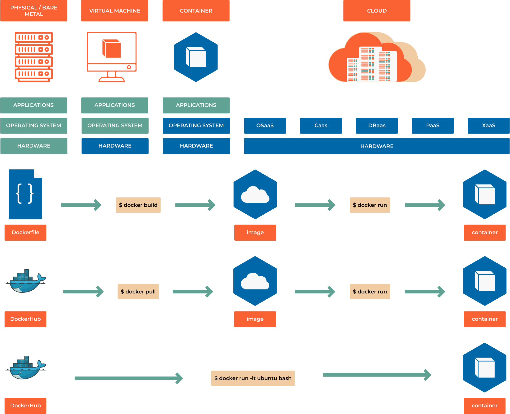

8.4 Using Dockerfile
{kind=link}
Hello world
Create a file called Dockerfile where we will print
FROM alpine
CMD ["echo", "Hell on World!"]
# clone repository
# change directory to docker_examples/hello_world
# get location by running explorer.exe .
# copy the location from explorer
# change directory to the location
# build the created image with a tag (-t) hello from current location (.)
docker build -t hello .
# instantiate a container based on created image using tag hello
docker run hello
# instantiate a container based on created image using tag hello and giving the container a name
docker run --name HelloWorld hello
# instantiate a container based on created image using tag hello and remove it after run(-rm)
docker run --rm hello
Deploy web server
Create a file index.html
<!doctype html>
<html lang="en">
<head>
<meta charset="utf-8">
<title>Introduction to DevOps - Docker</title>
<style>
html, body {
text-align: center;
}
</style>
</head>
<body>
<h1>Introduction to DevOps - Docker</h1>
<h2>Web server deployed successfully!</h2>
</body>
</html>
And a file Dockerfile
FROM nginx:stable-alpine
# Change our working directory to the root of nginx web host
WORKDIR /usr/share/nginx/html
# Copy in the the index.html
COPY index.html /usr/share/nginx/html/
# clone repository using git clone repo_url
# change directory to docker_examples/hello_world
# get location by running explorer.exe .
# copy the location from explorer
# change directory to the location
docker build -t web_server .
# build the created image with a tag (-t) hello from current location (.)
docker container run -p 8080:80 --name web_server -d web_server
Building a Dockerfile
Before we construct our Dockerfile, you need to understand what makes up the file. This will be a text file, named Dockerfile, that includes specific keywords that dictate how to build a specific image. The specific keywords you can use in a file are:
ADD copies the files from a source on the host into the container’s own filesystem at the set destination.
ENV sets environment variables.
EXPOSE associates a specific port to enable networking between the container and the outside world.
FROM defines the base image used to start the build process.
USER sets the UID (or username) which is to run the container.
VOLUME is used to enable access from the container to a directory on the host machine.
WORKDIR sets the path where the command, defined with CMD, is to be executed.
LABEL allows you to add a label to your docker image.
RUN - RUN instruction allows you to install your application and packages required for it. It executes any commands on top of the current image and creates a new layer by committing the results. Often you will find multiple RUN instructions in a Dockerfile.
CMD - can be used for executing a specific command within the container.CMD instruction allows you to set a default command, which will be executed only when you run container without specifying a command. If Docker container runs with a command, the default command will be ignored. If Dockerfile has more than one CMD instruction, all but last CMD instructions are ignored. The CMD can be overridden when starting a container with
docker run image_name other_commandexampledocker run fedora bash.ENTRYPOINT is also closely related to CMD and can modify the way a container is started from an image, sets a default application to be used every time a container is created with the image.
FROM ubuntu:latest
LABEL YOUR_NAME YOUR_EMAIL
RUN apt-get -y update
RUN apt-get -y upgrade
RUN apt-get install -y tree
CMD tree -d -L 2 /
to build the image we run docker build -t getting_tree . and to run docker docker run getting_tree